Design
Arabidopsis seedlings
Three biological replicates per group: 0.1% DMSO mock, 10 µM ABA, and 10 µM iCB. Samples were collected after three hours of treatment.
A saved AidCistrome analysis follows Arabidopsis samples from experimental design to gene expression and gene-set patterns. ABA and iCB are each compared with a shared DMSO mock group.
AidCistrome connects the public sequencing runs to a human-reviewed sample design, quantification, differential expression, gene sets, GO relationships and promoter-motif analysis. The resulting figures document each step without turning exploratory patterns into a direct ABA-versus-iCB test.
Three biological replicates per group: 0.1% DMSO mock, 10 µM ABA, and 10 µM iCB. Samples were collected after three hours of treatment.
The authors report that iCB elicits ABA-responsive gene expression and investigate the receptor interactions behind its activity. This site does not reproduce their figures.
The reviewed model is ~treatment. It contains ABA–mock and iCB–mock contrasts. Similarity between their outputs is descriptive; no direct ABA–iCB test was run here.
Source: GEO GSE279431, reviewed design, and figure provenance. GEO's title, organism, and overall design identify Arabidopsis; its summary contains inconsistent tomato wording, which is not used to label these samples.
The blind variance-stabilized PCA includes mock, ABA, and iCB samples together. Inspect the visible replicate spread before attributing separation to treatment; contrast-specific views are available below.
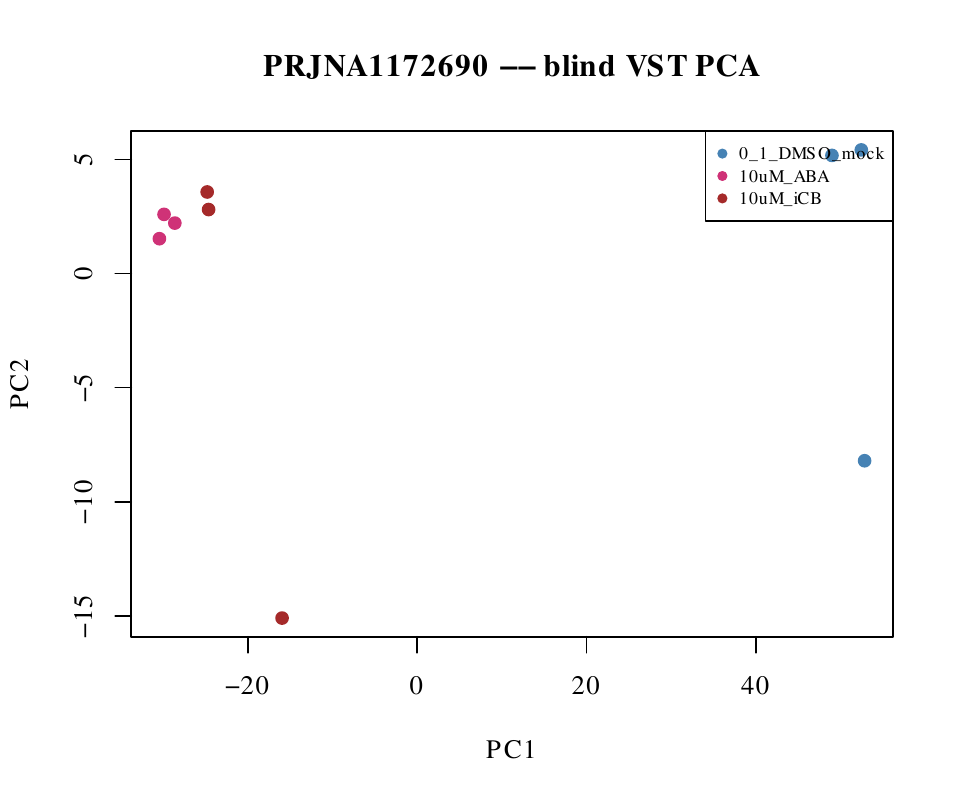
These panels were calculated separately. Their axes and variance percentages cannot be compared directly.
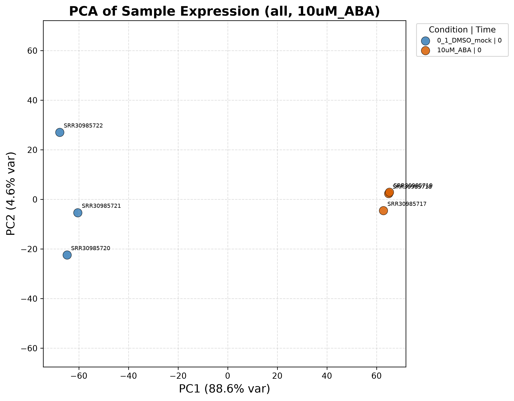
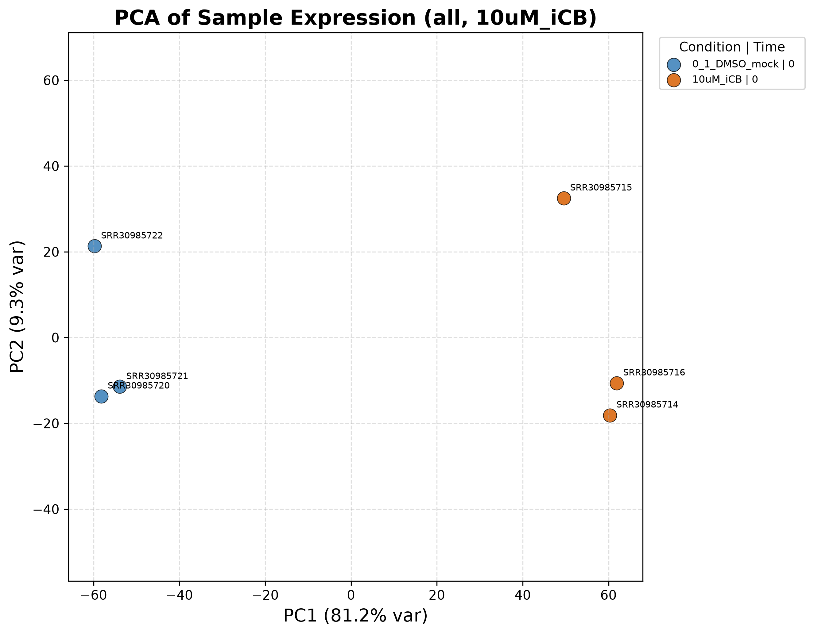
The volcano views show direction, effect size, and adjusted significance for the two specified contrasts. The zoomed views cap the displayed vertical range; full-range plots are also available.
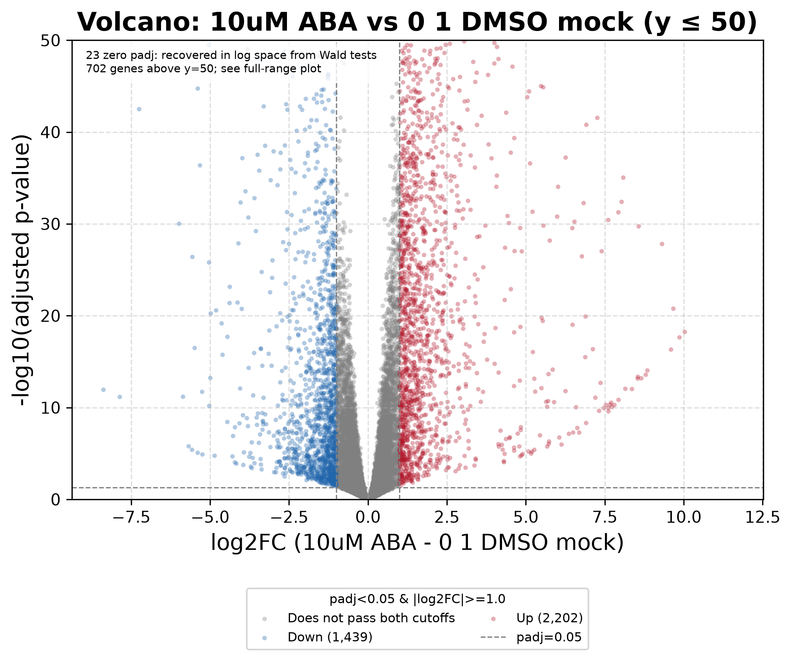
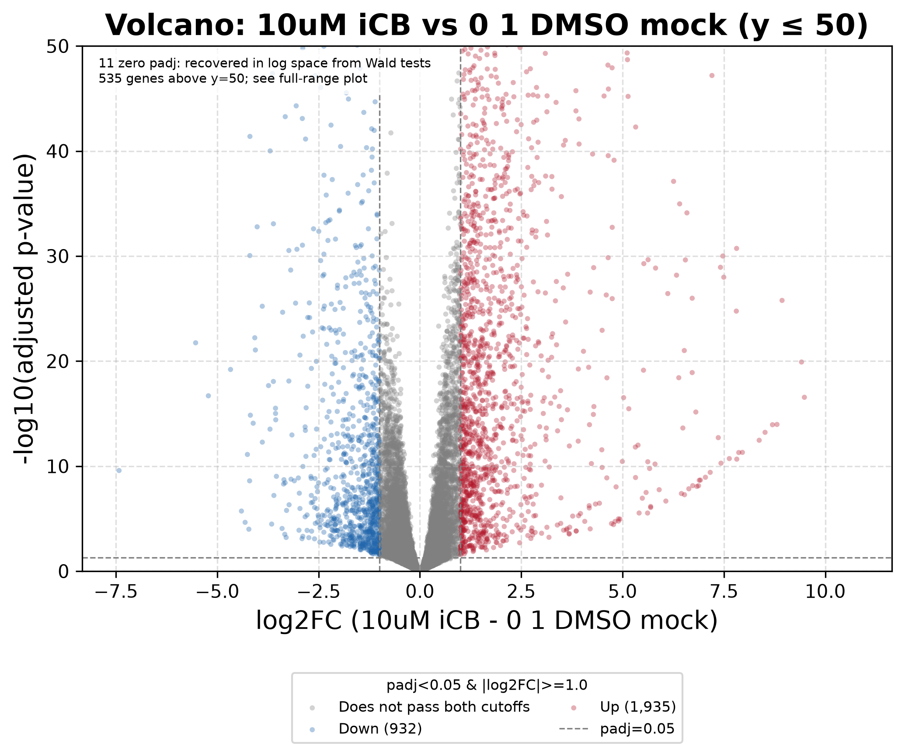
The percentile overview makes the shared direction readable at page width. The original gene-view figures retain individual gene context and can be opened at full resolution.
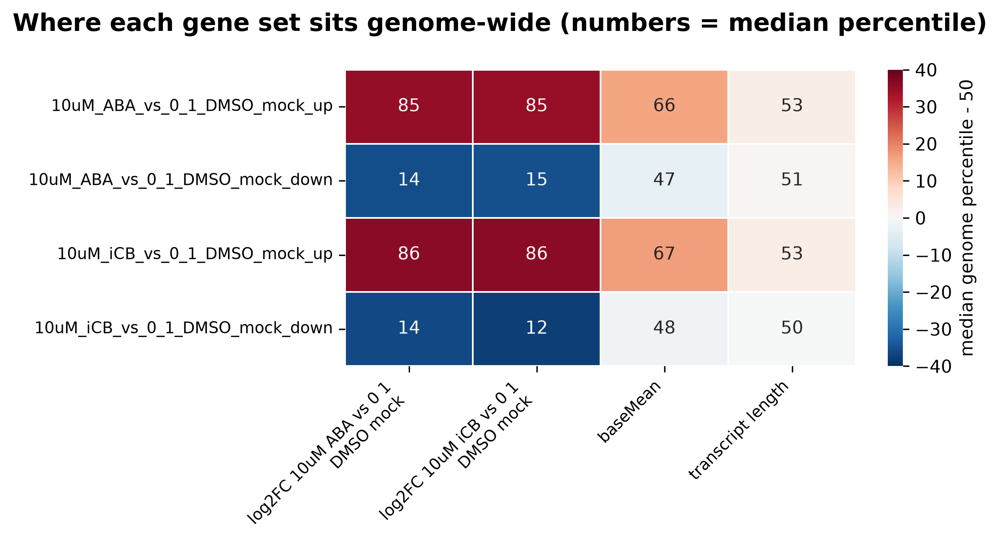


In the saved preranked GSEA tables, “response to abscisic acid” and “response to water deprivation” have positive enrichment scores in both treatment-versus-mock contrasts. Terms and thresholds are shown on the original plots.


A displayed FDR value of zero is an unresolved permutation estimate, not a claim of zero uncertainty. Enrichment describes ranked gene sets; it does not establish receptor binding or a causal pathway.
These selected views use only GO terms and Jaccard-overlap edges saved by AidCistrome. The full interactive networks let you search terms and inspect overlap details; links do not imply direct gene regulation.

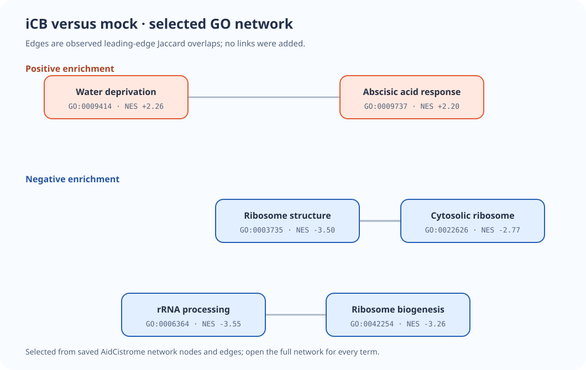
The selected SVG previews preserve observed nodes, NES values and edges from the saved network tables. The source network filters broad and near-duplicate GO terms for display; the enrichment tables are unchanged.
AidCistrome tests known plant transcription-factor motifs in promoters of the selected up-regulated gene sets. bZIP motifs rank prominently in both saved treatment-versus-mock outputs. Motif enrichment suggests candidates for follow-up; it does not identify binding events or establish which factor caused the expression change.

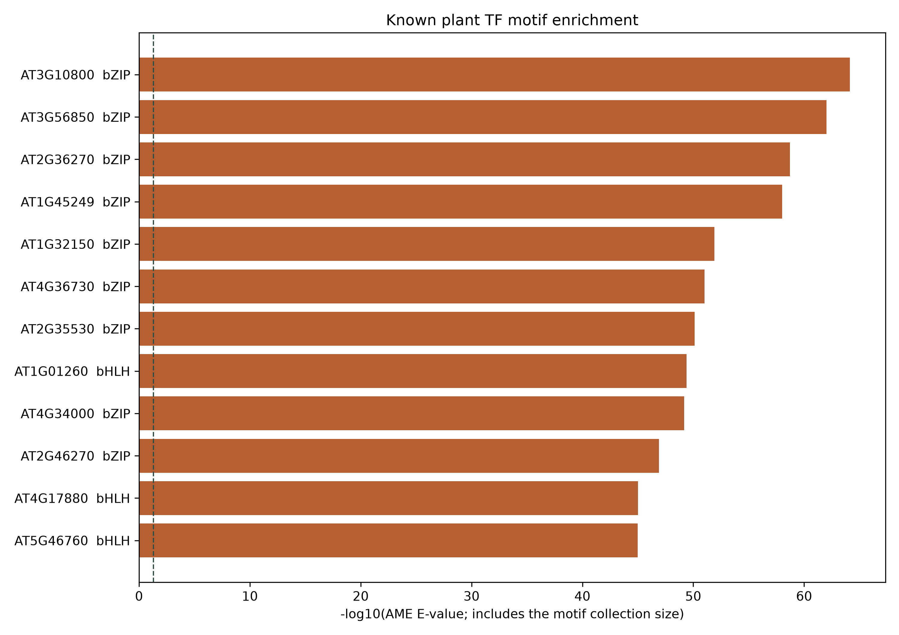
The motif library and promoter background affect these rankings. ABA-up and iCB-up are separate selected sets, so similar family rankings do not measure a direct treatment difference.
The landscape places GO normalized enrichment scores from the two separate contrasts on the same plane. Points near the diagonal share a direction and similar score; their separation is an exploratory comparison.
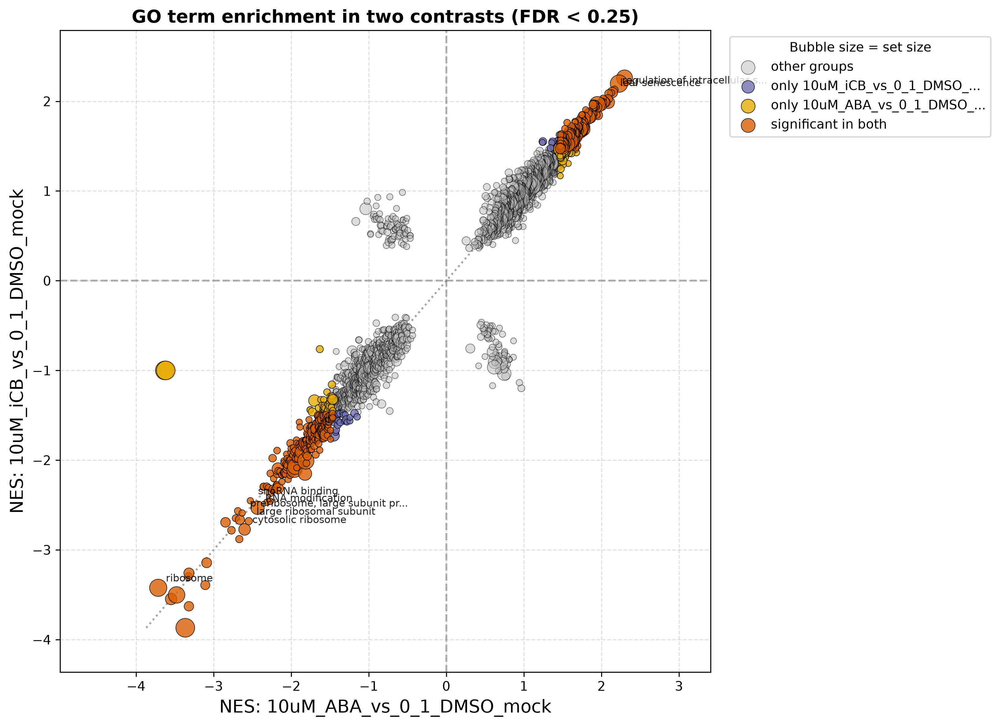
PC1 loading figures identify the largest positive and negative contributors within each separately calculated PCA. These are exploratory contributors, not independently validated biomarkers.
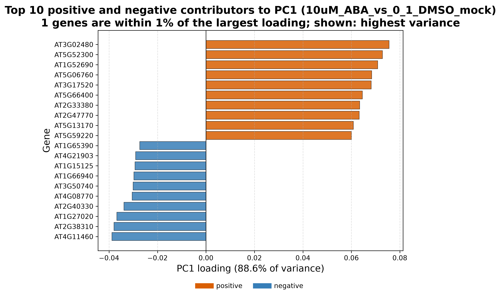
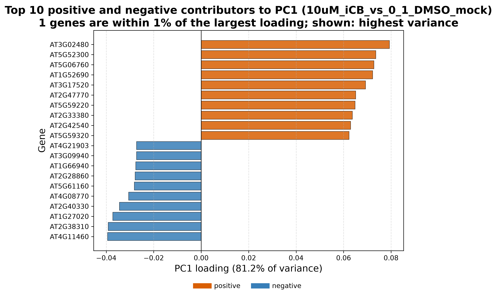
The older PRJNA968041 Arabidopsis case study remains available as a separate archived example.